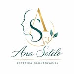

Estética Odontofacial • Avellaneda

Dra. Ana Sotelo — Odontóloga, Cirujana Oral, Estomatóloga y Máster en Armonización Facial. Un espacio donde la salud y la estética se unen para que te sientas bien por dentro y por fuera.
Salud bucal y estética dental de la mano. Tratamientos modernos, personalizados y con la tecnología más avanzada para que tu sonrisa sea tu mejor carta de presentación.
Carillas de porcelana sin desgaste dentario, blanqueamiento dental ambulatorio y diseño de sonrisa. Para una sonrisa natural, luminosa y duradera.
Limpieza dental profesional, tratamientos preventivos y restauraciones. La base de una boca sana empieza con controles regulares y atención de calidad.
Implantes dentales de alta calidad para recuperar tu sonrisa completa. La solución más natural y duradera para reemplazar dientes faltantes.
Extracciones, cirugías de terceros molares y procedimientos quirúrgicos realizados con precisión, experiencia y máximo confort para el paciente.
Diagnóstico y tratamiento de enfermedades de la mucosa oral y tejidos relacionados. Atención especializada para la salud integral de tu boca.
Una evaluación completa para conocer tu caso, definir el tratamiento ideal y resolver todas tus dudas. El primer paso hacia la sonrisa que querés.
Como Máster en Armonización Facial, Ana combina precisión médica con visión estética para resultados naturales que realzan tu belleza sin alterar tu esencia.
Labios naturales y radiantes, relleno de surcos y volumización facial. Resultados inmediatos y de larga duración con técnica médica de precisión.
Suavizá expresiones y líneas de expresión con toxina botulínica aplicada por una profesional con formación especializada. Natural y efectivo.
Nariz más armónica y labios hidratados con ácido hialurónico. Una combinación de resultados estéticos visibles sin necesidad de cirugía.
Un plan integral personalizado para equilibrar y embellecer tu rostro. Dra. Sotelo diseña cada tratamiento en función de tu anatomía y tus objetivos.
Ana Sotelo es odontóloga, cirujana oral y Máster en Armonización Facial — una combinación poco común que te permite resolver tanto tu salud bucal como tu estética facial en el mismo consultorio.
Escribime por WhatsApp o completá el formulario y te respondo para coordinar tu consulta.
11 5220-1415
Av. Bartolomé Mitre 2716, Avellaneda
@anasoteloodontofacial